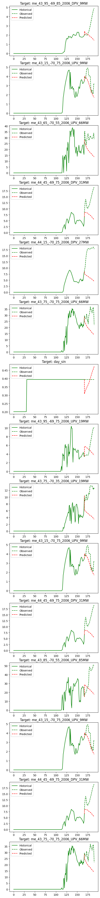

[4]:
import os
import sys
from pathlib import Path
import pandas as pd
import numpy as np
from icecream import install
install()
import traceback
import torch
import random
import multiprocessing
import warnings
warnings.filterwarnings('ignore')
from matplotlib import pyplot as plt
LOCALS = ['NVD4K9M6K4', 'x1']
import socket
hostname = socket.gethostname()
IS_LOCAL = hostname in LOCALS
MAX_WORKERS = 20 if not IS_LOCAL else 8
# IS_LOCAL = False
if hostname == "NVD4K9M6K4":
multiprocessing.set_start_method("fork")
def view_df(data: pd.DataFrame):
pd.set_option('display.max_columns', None)
display(data)
pd.reset_option("max_columns")
if IS_LOCAL:
%load_ext autoreload
%autoreload 2
The autoreload extension is already loaded. To reload it, use:
%reload_ext autoreload
Parameters#
[5]:
model_name = "eran" # eran, graphic
batch_size = 64
Load data#
[6]:
import glob
import zipfile
import os
from tqdm import tqdm
import concurrent.futures
def read_pv2006_state(zipname):
# print(f'Reading {zipname}: {os.stat(zipname).st_size} bytes', flush=True)
with zipfile.ZipFile(zipname) as zf:
dfs = []
s = os.path.basename(zipname).split('-')
state = "-".join(s[:-2])
for file in zf.namelist():
if not file.endswith('.csv'):
continue
data_type, latitude, longitude, weather_year, pv_type, capacity, time_interval, _ = file.split('_')
if data_type != "Actual":
continue
with zf.open(file) as f:
df = pd.read_csv(f)
df['LocalTime'] = pd.to_datetime(df['LocalTime'])
df['data_type'] = data_type
df['latitude'] = latitude
df['longitude'] = longitude
# df['weather_year'] = weather_year
df['pv_type'] = pv_type
df['capacity'] = capacity[:-2] # ignore "MW" suffix
# df['time_interval'] = time_interval
df['state'] = state
df['filename'] = file
dfs.append(df)
# view_df(df); return
return pd.concat(dfs, axis=0)
# data_dir = Path(f'data/graphic/{"dev" if IS_LOCAL else "prod"}')
data_dir = Path(f'data/graphic/')
data_dir.mkdir(exist_ok=True)
files = glob.glob("data/*.zip")
if IS_LOCAL:
# files = random.sample(files, k=1)
n_states = 1
else:
# n_states = 2
# n_states = len(files)
n_states = 1
train_pkl = data_dir / f'train_{n_states}.pkl'
val_pkl = data_dir / f'val_{n_states}.pkl'
test_pkl = data_dir / f'test_{n_states}.pkl'
PKL_AVAILABLE = train_pkl.is_file() and val_pkl.is_file() and test_pkl.is_file()
if not PKL_AVAILABLE:
dfs = []
files = files[:n_states]
with tqdm(total=len(files)) as pbar:
max_workers = min(MAX_WORKERS, len(files), os.cpu_count())
with concurrent.futures.ProcessPoolExecutor(max_workers=max_workers) as executor:
futures = {executor.submit(read_pv2006_state, file): file for file in files}
for future in concurrent.futures.as_completed(futures):
# print(f"Done ({cnt}/{len(futures)}): {futures[future]}")
df = future.result()
dfs.append(df)
pbar.update(1)
df = pd.concat(dfs, axis=0)
view_df(df)
Preprocessing#
[7]:
CYCLIC_COLS = [
'hour',
'minute',
'day',
'day_of_week'
]
new_cyclic_cols = [
c for col in CYCLIC_COLS for c in [f'{col}_sin', f'{col}_cos']
]
def add_cyclic_cols(df):
for col in CYCLIC_COLS:
df[f"{col}_sin"] = np.sin((2*np.pi*df[col].astype(float))/max(df[col].astype(float)))
df[f"{col}_cos"] = np.cos((2*np.pi*df[col].astype(float))/max(df[col].astype(float)))
return df
time_cols=['minute', 'hour', 'day', 'day_of_week']
if not PKL_AVAILABLE:
df.sort_values(by='LocalTime', inplace=True)
tmin = df['LocalTime'].min()
time_from_start = df['LocalTime'] - tmin
df['time_idx'] = pd.to_numeric(time_from_start.dt.total_seconds() / 300, downcast='integer')
df['minute'] = df['LocalTime'].dt.minute
df['hour'] = df['LocalTime'].dt.hour
df['day'] = df['LocalTime'].dt.day
df['day_of_week'] = df['LocalTime'].dt.dayofweek
df['month'] = df['LocalTime'].dt.month
df['year'] = df['LocalTime'].dt.year
# df['sensor'] = df['filename'].apply(lambda filename: '_'.join(filename.split('_')[1:-2]))
# df['sensor'] = df.apply(lambda row: '_'.join([row["state"]] + row['filename'].split('_')[1:-2]), axis=1)
df['sensor'] = df['state'] + '_' + df['filename'].str.split("_").str[1:-2].str.join('_')
df = add_cyclic_cols(df)
df['group_id'] = 'x'
view_df(df)
[8]:
from united.utils import convert_dataframe_from_row_sensors_to_column_sensors
import pickle
# common_cols=['minute', 'hour', 'day', 'day_of_week']
common_cols = new_cyclic_cols
testing_cutoff_time = pd.to_datetime('2006/12/01')
validation_cutoff_time = pd.to_datetime('2006/11/01')
def convert(df, sensors):
"""
Convert ....
"""
out = convert_dataframe_from_row_sensors_to_column_sensors(
df,
sensors=sensors,
common_cols=common_cols + ['time_idx', 'group_id'],
group_keys=['time_idx'],
sensor_col='Power(MW)',
max_workers=MAX_WORKERS
)
time_varying_known_categoricals=["minute", "hour", "day", "day_of_week","month", "year", "data_type", "sensor", "state", "pv_type"]
cat_col = list(set(time_varying_known_categoricals).intersection(set(list(out.columns))))
for col in cat_col:
out[col] = out[col].astype(str).astype('category')
return out
if not PKL_AVAILABLE:
sensors = df['sensor'].unique().tolist()
train_df = df[df['LocalTime'] < validation_cutoff_time]
val_df = df[(df["LocalTime"] >= validation_cutoff_time) & (df["LocalTime"] < testing_cutoff_time)]
test_df = df[(df["LocalTime"] >= testing_cutoff_time)]
train_df = convert(train_df, sensors)
val_df = convert(val_df, sensors)
test_df = convert(test_df, sensors)
with open(train_pkl, 'wb') as fp:
pickle.dump(train_df, fp)
with open(val_pkl, 'wb') as fp:
pickle.dump(val_df, fp)
with open(test_pkl, 'wb') as fp:
pickle.dump(test_df, fp)
else:
with open(train_pkl, 'rb') as fp:
train_df = pickle.load(fp)
with open(val_pkl, 'rb') as fp:
val_df = pickle.load(fp)
with open(test_pkl, 'rb') as fp:
test_df = pickle.load(fp)
train_df = add_cyclic_cols(train_df)
val_df = add_cyclic_cols(val_df)
test_df = add_cyclic_cols(test_df)
sensors = list(set(list(train_df.columns[6:])).difference(set(new_cyclic_cols)))
# sensors = list(train_df.columns[6:-len(new_cyclic_cols)])
ic(train_df.shape, val_df.shape, test_df.shape)
ic(len(sensors))
if IS_LOCAL:
ic(sensors)
view_df(train_df)
ic| train_df.shape: (87552, 37)
val_df.shape: (8640, 37)
test_df.shape: (8928, 37)
ic| len(sensors): 23
ic| sensors: ['me_43.85_-70.25_2006_DPV_23MW',
'me_43.15_-70.75_2006_UPV_9MW',
'me_43.65_-70.55_2006_UPV_66MW',
'me_44.25_-69.85_2006_UPV_19MW',
'me_44.25_-70.35_2006_UPV_94MW',
'me_43.55_-70.85_2006_UPV_94MW',
'me_43.35_-70.85_2006_UPV_56MW',
'me_43.85_-70.35_2006_DPV_23MW',
'me_43.85_-70.55_2006_UPV_85MW',
'me_43.55_-70.65_2006_DPV_26MW',
'me_44.45_-69.75_2006_DPV_31MW',
'me_43.95_-70.25_2006_UPV_28MW',
'me_43.75_-70.75_2006_UPV_66MW',
'me_43.95_-69.75_2006_UPV_19MW',
'me_43.75_-70.35_2006_UPV_19MW',
'me_43.95_-70.35_2006_DPV_23MW',
'me_43.25_-70.65_2006_UPV_85MW',
'me_43.45_-70.65_2006_DPV_26MW',
'me_43.45_-70.65_2006_UPV_38MW',
'me_44.25_-69.65_2006_UPV_9MW',
'me_43.95_-69.85_2006_DPV_9MW',
'me_44.15_-70.05_2006_UPV_19MW',
'me_44.15_-70.25_2006_DPV_27MW']
| minute | hour | day | day_of_week | time_idx | group_id | me_43.15_-70.75_2006_UPV_9MW | me_43.85_-70.25_2006_DPV_23MW | me_43.95_-69.75_2006_UPV_19MW | me_43.45_-70.65_2006_UPV_38MW | me_43.85_-70.35_2006_DPV_23MW | me_43.25_-70.65_2006_UPV_85MW | me_44.45_-69.75_2006_DPV_31MW | me_43.45_-70.65_2006_DPV_26MW | me_43.65_-70.55_2006_UPV_66MW | me_44.25_-69.85_2006_UPV_19MW | me_44.25_-70.35_2006_UPV_94MW | me_43.35_-70.85_2006_UPV_56MW | me_44.25_-69.65_2006_UPV_9MW | me_43.75_-70.35_2006_UPV_19MW | me_43.95_-70.25_2006_UPV_28MW | me_43.85_-70.55_2006_UPV_85MW | me_44.15_-70.05_2006_UPV_19MW | me_43.55_-70.85_2006_UPV_94MW | me_43.55_-70.65_2006_DPV_26MW | me_43.95_-69.85_2006_DPV_9MW | me_43.75_-70.75_2006_UPV_66MW | me_43.95_-70.35_2006_DPV_23MW | me_44.15_-70.25_2006_DPV_27MW | hour_sin | hour_cos | minute_sin | minute_cos | day_sin | day_cos | day_of_week_sin | day_of_week_cos | |
|---|---|---|---|---|---|---|---|---|---|---|---|---|---|---|---|---|---|---|---|---|---|---|---|---|---|---|---|---|---|---|---|---|---|---|---|---|---|
| 0 | 0 | 0 | 1 | 6 | 0 | x | 0.0 | 0.0 | 0.0 | 0.0 | 0.0 | 0.0 | 0.0 | 0.0 | 0.0 | 0.0 | 0.0 | 0.0 | 0.0 | 0.0 | 0.0 | 0.0 | 0.0 | 0.0 | 0.0 | 0.0 | 0.0 | 0.0 | 0.0 | 0.000000e+00 | 1.0 | 0.000000e+00 | 1.000000 | 2.012985e-01 | 0.97953 | -2.449294e-16 | 1.0 |
| 1 | 5 | 0 | 1 | 6 | 1 | x | 0.0 | 0.0 | 0.0 | 0.0 | 0.0 | 0.0 | 0.0 | 0.0 | 0.0 | 0.0 | 0.0 | 0.0 | 0.0 | 0.0 | 0.0 | 0.0 | 0.0 | 0.0 | 0.0 | 0.0 | 0.0 | 0.0 | 0.0 | 0.000000e+00 | 1.0 | 5.406408e-01 | 0.841254 | 2.012985e-01 | 0.97953 | -2.449294e-16 | 1.0 |
| 2 | 10 | 0 | 1 | 6 | 2 | x | 0.0 | 0.0 | 0.0 | 0.0 | 0.0 | 0.0 | 0.0 | 0.0 | 0.0 | 0.0 | 0.0 | 0.0 | 0.0 | 0.0 | 0.0 | 0.0 | 0.0 | 0.0 | 0.0 | 0.0 | 0.0 | 0.0 | 0.0 | 0.000000e+00 | 1.0 | 9.096320e-01 | 0.415415 | 2.012985e-01 | 0.97953 | -2.449294e-16 | 1.0 |
| 3 | 15 | 0 | 1 | 6 | 3 | x | 0.0 | 0.0 | 0.0 | 0.0 | 0.0 | 0.0 | 0.0 | 0.0 | 0.0 | 0.0 | 0.0 | 0.0 | 0.0 | 0.0 | 0.0 | 0.0 | 0.0 | 0.0 | 0.0 | 0.0 | 0.0 | 0.0 | 0.0 | 0.000000e+00 | 1.0 | 9.898214e-01 | -0.142315 | 2.012985e-01 | 0.97953 | -2.449294e-16 | 1.0 |
| 4 | 20 | 0 | 1 | 6 | 4 | x | 0.0 | 0.0 | 0.0 | 0.0 | 0.0 | 0.0 | 0.0 | 0.0 | 0.0 | 0.0 | 0.0 | 0.0 | 0.0 | 0.0 | 0.0 | 0.0 | 0.0 | 0.0 | 0.0 | 0.0 | 0.0 | 0.0 | 0.0 | 0.000000e+00 | 1.0 | 7.557496e-01 | -0.654861 | 2.012985e-01 | 0.97953 | -2.449294e-16 | 1.0 |
| ... | ... | ... | ... | ... | ... | ... | ... | ... | ... | ... | ... | ... | ... | ... | ... | ... | ... | ... | ... | ... | ... | ... | ... | ... | ... | ... | ... | ... | ... | ... | ... | ... | ... | ... | ... | ... | ... |
| 87547 | 35 | 23 | 31 | 1 | 87547 | x | 0.0 | 0.0 | 0.0 | 0.0 | 0.0 | 0.0 | 0.0 | 0.0 | 0.0 | 0.0 | 0.0 | 0.0 | 0.0 | 0.0 | 0.0 | 0.0 | 0.0 | 0.0 | 0.0 | 0.0 | 0.0 | 0.0 | 0.0 | -2.449294e-16 | 1.0 | -7.557496e-01 | -0.654861 | -2.449294e-16 | 1.00000 | 8.660254e-01 | 0.5 |
| 87548 | 40 | 23 | 31 | 1 | 87548 | x | 0.0 | 0.0 | 0.0 | 0.0 | 0.0 | 0.0 | 0.0 | 0.0 | 0.0 | 0.0 | 0.0 | 0.0 | 0.0 | 0.0 | 0.0 | 0.0 | 0.0 | 0.0 | 0.0 | 0.0 | 0.0 | 0.0 | 0.0 | -2.449294e-16 | 1.0 | -9.898214e-01 | -0.142315 | -2.449294e-16 | 1.00000 | 8.660254e-01 | 0.5 |
| 87549 | 45 | 23 | 31 | 1 | 87549 | x | 0.0 | 0.0 | 0.0 | 0.0 | 0.0 | 0.0 | 0.0 | 0.0 | 0.0 | 0.0 | 0.0 | 0.0 | 0.0 | 0.0 | 0.0 | 0.0 | 0.0 | 0.0 | 0.0 | 0.0 | 0.0 | 0.0 | 0.0 | -2.449294e-16 | 1.0 | -9.096320e-01 | 0.415415 | -2.449294e-16 | 1.00000 | 8.660254e-01 | 0.5 |
| 87550 | 50 | 23 | 31 | 1 | 87550 | x | 0.0 | 0.0 | 0.0 | 0.0 | 0.0 | 0.0 | 0.0 | 0.0 | 0.0 | 0.0 | 0.0 | 0.0 | 0.0 | 0.0 | 0.0 | 0.0 | 0.0 | 0.0 | 0.0 | 0.0 | 0.0 | 0.0 | 0.0 | -2.449294e-16 | 1.0 | -5.406408e-01 | 0.841254 | -2.449294e-16 | 1.00000 | 8.660254e-01 | 0.5 |
| 87551 | 55 | 23 | 31 | 1 | 87551 | x | 0.0 | 0.0 | 0.0 | 0.0 | 0.0 | 0.0 | 0.0 | 0.0 | 0.0 | 0.0 | 0.0 | 0.0 | 0.0 | 0.0 | 0.0 | 0.0 | 0.0 | 0.0 | 0.0 | 0.0 | 0.0 | 0.0 | 0.0 | -2.449294e-16 | 1.0 | -2.449294e-16 | 1.000000 | -2.449294e-16 | 1.00000 | 8.660254e-01 | 0.5 |
87552 rows × 37 columns
[ ]:
# train_df['group_id'] = 'x'
# val_df['group_id'] = 'x'
# test_df['group_id'] = 'x'
# cat_cols = ["minute", "hour", "day", "day_of_week", 'group_id']
# for col in cat_cols:
# train_df[col] = train_df[col].astype("category")
# val_df[col] = val_df[col].astype("category")
# test_df[col] = test_df[col].astype("category")
# data_dir = Path(f'data/graphic/{"dev" if IS_LOCAL else "prod"}')
# data_dir.mkdir(exist_ok=True)
# train_pkl = data_dir / 'train.pkl'
# val_pkl = data_dir / 'val.pkl'
# test_pkl = data_dir / 'test.pkl'
# with open(train_pkl, 'wb') as fp:
# pickle.dump(train_df, fp)
# with open(val_pkl, 'wb') as fp:
# pickle.dump(val_df, fp)
# with open(test_pkl, 'wb') as fp:
# pickle.dump(test_df, fp)
[ ]:
from united.data.timeseries import SensorTimeSeriesDataset
max_encoder_length = 7*24
max_prediction_length = 24
targets = sensors
encoder_variables = common_cols + targets
decoder_variables = common_cols
train_dataset = SensorTimeSeriesDataset(
data=train_df,
group_ids='group_id',
sensors=sensors + common_cols,
time_idx='time_idx',
min_encoder_length=max_encoder_length,
max_encoder_length=max_encoder_length,
min_decoder_length=max_prediction_length,
max_decoder_length=max_prediction_length,
encoder_variables=encoder_variables,
decoder_variables=decoder_variables,
targets=targets,
training=True,
# imputers={
# sensor: 'tryhard' for sensor in sensors
# },
return_missing_mask=True
)
val_dataset = SensorTimeSeriesDataset.from_dataset(train_dataset, val_df, training=False)
test_dataset = SensorTimeSeriesDataset.from_dataset(train_dataset, test_df, training=False)
if IS_LOCAL:
batch_size = 16
num_workers = 1
else:
num_workers = 2
train_loader = train_dataset.to_dataloader(batch_size=batch_size, num_workers=num_workers)
val_loader = val_dataset.to_dataloader(batch_size=batch_size)
test_loader = test_dataset.to_dataloader(batch_size=batch_size)
it_ = iter(train_loader)
ic(len(train_dataset), len(val_dataset), len(test_dataset))
ic(len(train_loader), len(val_loader), len(test_loader))
Finished Indexing in 4.92(s)
Preprocessing ...
Done
Finished Indexing in 0.48(s)
Preprocessing ...
Done
Finished Indexing in 0.49(s)
Preprocessing ...
Done
ic| len(train_dataset): 87360
len(val_dataset): 8448
len(test_dataset): 8736
ic| len(train_loader): 5460
len(val_loader): 528
len(test_loader): 546
(5460, 528, 546)
[ ]:
from united.models.eran import EranForecaster
from united.models.graphic import GraphICForecaster
if model_name == 'eran':
model = EranForecaster.from_dataset(
train_dataset,
reduce_on_plateau_patience=2,
node_dim=5,
# dilation_exponential=2,
# conv_channels=64,
# residual_channels=64,
skip_channels=128,
end_channels=256,
)
elif model_name == "graphic":
model = GraphICForecaster.from_dataset(
train_dataset,
reduce_on_plateau_patience=2,
feature_hidden_size=64,
event_hidden_size=16,
num_event_states=5,
)
else:
raise ValueError(f"Unknown model name: {model_name}")
model
<EranForecaster>(Params: {'group_ids': 'group_id', 'time_idx': 'time_idx', 'min_encoder_length': 168, 'max_encoder_length': 168, 'min_decoder_length': 24, 'max_decoder_length': 24, 'sensors': ['me_43_75_-70_35_2006_UPV_19MW', 'me_43_85_-70_35_2006_DPV_23MW', 'me_44_15_-70_25_2006_DPV_27MW', 'me_43_55_-70_65_2006_DPV_26MW', 'me_44_45_-69_75_2006_DPV_31MW', 'me_43_75_-70_75_2006_UPV_66MW', 'me_43_25_-70_65_2006_UPV_85MW', 'me_44_15_-70_05_2006_UPV_19MW', 'me_43_95_-69_85_2006_DPV_9MW', 'me_43_95_-69_75_2006_UPV_19MW', 'me_43_45_-70_65_2006_DPV_26MW', 'me_43_45_-70_65_2006_UPV_38MW', 'me_43_95_-70_35_2006_DPV_23MW', 'me_43_65_-70_55_2006_UPV_66MW', 'me_43_85_-70_55_2006_UPV_85MW', 'me_43_15_-70_75_2006_UPV_9MW', 'me_43_35_-70_85_2006_UPV_56MW', 'me_44_25_-70_35_2006_UPV_94MW', 'me_43_85_-70_25_2006_DPV_23MW', 'me_43_55_-70_85_2006_UPV_94MW', 'me_43_95_-70_25_2006_UPV_28MW', 'me_44_25_-69_85_2006_UPV_19MW', 'me_44_25_-69_65_2006_UPV_9MW', 'hour_sin', 'hour_cos', 'minute_sin', 'minute_cos', 'day_sin', 'day_cos', 'day_of_week_sin', 'day_of_week_cos'], 'encoder_variables': ['me_43_75_-70_35_2006_UPV_19MW', 'me_43_85_-70_35_2006_DPV_23MW', 'me_44_15_-70_25_2006_DPV_27MW', 'me_43_55_-70_65_2006_DPV_26MW', 'me_44_45_-69_75_2006_DPV_31MW', 'me_43_75_-70_75_2006_UPV_66MW', 'me_43_25_-70_65_2006_UPV_85MW', 'me_44_15_-70_05_2006_UPV_19MW', 'me_43_95_-69_85_2006_DPV_9MW', 'me_43_95_-69_75_2006_UPV_19MW', 'me_43_45_-70_65_2006_DPV_26MW', 'me_43_45_-70_65_2006_UPV_38MW', 'me_43_95_-70_35_2006_DPV_23MW', 'me_43_65_-70_55_2006_UPV_66MW', 'me_43_85_-70_55_2006_UPV_85MW', 'me_43_15_-70_75_2006_UPV_9MW', 'me_43_35_-70_85_2006_UPV_56MW', 'me_44_25_-70_35_2006_UPV_94MW', 'me_43_85_-70_25_2006_DPV_23MW', 'me_43_55_-70_85_2006_UPV_94MW', 'me_43_95_-70_25_2006_UPV_28MW', 'me_44_25_-69_85_2006_UPV_19MW', 'me_44_25_-69_65_2006_UPV_9MW', 'hour_sin', 'hour_cos', 'minute_sin', 'minute_cos', 'day_sin', 'day_cos', 'day_of_week_sin', 'day_of_week_cos'], 'decoder_variables': ['hour_sin', 'hour_cos', 'minute_sin', 'minute_cos', 'day_sin', 'day_cos', 'day_of_week_sin', 'day_of_week_cos'], 'targets': ['me_43_75_-70_35_2006_UPV_19MW', 'me_43_85_-70_35_2006_DPV_23MW', 'me_44_15_-70_25_2006_DPV_27MW', 'me_43_55_-70_65_2006_DPV_26MW', 'me_44_45_-69_75_2006_DPV_31MW', 'me_43_75_-70_75_2006_UPV_66MW', 'me_43_25_-70_65_2006_UPV_85MW', 'me_44_15_-70_05_2006_UPV_19MW', 'me_43_95_-69_85_2006_DPV_9MW', 'me_43_95_-69_75_2006_UPV_19MW', 'me_43_45_-70_65_2006_DPV_26MW', 'me_43_45_-70_65_2006_UPV_38MW', 'me_43_95_-70_35_2006_DPV_23MW', 'me_43_65_-70_55_2006_UPV_66MW', 'me_43_85_-70_55_2006_UPV_85MW', 'me_43_15_-70_75_2006_UPV_9MW', 'me_43_35_-70_85_2006_UPV_56MW', 'me_44_25_-70_35_2006_UPV_94MW', 'me_43_85_-70_25_2006_DPV_23MW', 'me_43_55_-70_85_2006_UPV_94MW', 'me_43_95_-70_25_2006_UPV_28MW', 'me_44_25_-69_85_2006_UPV_19MW', 'me_44_25_-69_65_2006_UPV_9MW'], 'static_variables': [], 'training': True, 'random_length': True, 'scalers': {'me_43_95_-69_85_2006_DPV_9MW': StandardScaler(), 'me_43_55_-70_65_2006_DPV_26MW': StandardScaler(), 'me_43_85_-70_55_2006_UPV_85MW': StandardScaler(), 'me_44_45_-69_75_2006_DPV_31MW': StandardScaler(), 'me_43_65_-70_55_2006_UPV_66MW': StandardScaler(), 'hour_sin': StandardScaler(), 'me_44_25_-69_85_2006_UPV_19MW': StandardScaler(), 'me_43_75_-70_75_2006_UPV_66MW': StandardScaler(), 'me_43_45_-70_65_2006_UPV_38MW': StandardScaler(), 'me_43_85_-70_35_2006_DPV_23MW': StandardScaler(), 'me_43_25_-70_65_2006_UPV_85MW': StandardScaler(), 'me_43_35_-70_85_2006_UPV_56MW': StandardScaler(), 'me_43_95_-69_75_2006_UPV_19MW': StandardScaler(), 'day_sin': StandardScaler(), 'day_of_week_cos': StandardScaler(), 'me_43_15_-70_75_2006_UPV_9MW': StandardScaler(), 'me_44_25_-70_35_2006_UPV_94MW': StandardScaler(), 'me_44_25_-69_65_2006_UPV_9MW': StandardScaler(), 'me_43_55_-70_85_2006_UPV_94MW': StandardScaler(), 'day_of_week_sin': StandardScaler(), 'me_43_95_-70_35_2006_DPV_23MW': StandardScaler(), 'me_43_45_-70_65_2006_DPV_26MW': StandardScaler(), 'me_44_15_-70_05_2006_UPV_19MW': StandardScaler(), 'hour_cos': StandardScaler(), 'me_43_85_-70_25_2006_DPV_23MW': StandardScaler(), 'minute_cos': StandardScaler(), 'day_cos': StandardScaler(), 'minute_sin': StandardScaler(), 'me_44_15_-70_25_2006_DPV_27MW': StandardScaler(), 'me_43_75_-70_35_2006_UPV_19MW': StandardScaler(), 'me_43_95_-70_25_2006_UPV_28MW': StandardScaler()}, 'target_normalizers': {'me_43_75_-70_35_2006_UPV_19MW': StandardScaler(), 'me_43_85_-70_35_2006_DPV_23MW': StandardScaler(), 'me_44_15_-70_25_2006_DPV_27MW': StandardScaler(), 'me_43_55_-70_65_2006_DPV_26MW': StandardScaler(), 'me_44_45_-69_75_2006_DPV_31MW': StandardScaler(), 'me_43_75_-70_75_2006_UPV_66MW': StandardScaler(), 'me_43_25_-70_65_2006_UPV_85MW': StandardScaler(), 'me_44_15_-70_05_2006_UPV_19MW': StandardScaler(), 'me_43_95_-69_85_2006_DPV_9MW': StandardScaler(), 'me_43_95_-69_75_2006_UPV_19MW': StandardScaler(), 'me_43_45_-70_65_2006_DPV_26MW': StandardScaler(), 'me_43_45_-70_65_2006_UPV_38MW': StandardScaler(), 'me_43_95_-70_35_2006_DPV_23MW': StandardScaler(), 'me_43_65_-70_55_2006_UPV_66MW': StandardScaler(), 'me_43_85_-70_55_2006_UPV_85MW': StandardScaler(), 'me_43_15_-70_75_2006_UPV_9MW': StandardScaler(), 'me_43_35_-70_85_2006_UPV_56MW': StandardScaler(), 'me_44_25_-70_35_2006_UPV_94MW': StandardScaler(), 'me_43_85_-70_25_2006_DPV_23MW': StandardScaler(), 'me_43_55_-70_85_2006_UPV_94MW': StandardScaler(), 'me_43_95_-70_25_2006_UPV_28MW': StandardScaler(), 'me_44_25_-69_85_2006_UPV_19MW': StandardScaler(), 'me_44_25_-69_65_2006_UPV_9MW': StandardScaler()}, 'imputers': None, 'add_na': False, 'ignore_na': False, 'allow_missing_time_steps': False, 'unknown_value': nan, 'non_overlapped_windows': False, 'return_missing_mask': True}, Properties: DatasetProperties(encoder_names=['me_43_75_-70_35_2006_UPV_19MW', 'me_43_85_-70_35_2006_DPV_23MW', 'me_44_15_-70_25_2006_DPV_27MW', 'me_43_55_-70_65_2006_DPV_26MW', 'me_44_45_-69_75_2006_DPV_31MW', 'me_43_75_-70_75_2006_UPV_66MW', 'me_43_25_-70_65_2006_UPV_85MW', 'me_44_15_-70_05_2006_UPV_19MW', 'me_43_95_-69_85_2006_DPV_9MW', 'me_43_95_-69_75_2006_UPV_19MW', 'me_43_45_-70_65_2006_DPV_26MW', 'me_43_45_-70_65_2006_UPV_38MW', 'me_43_95_-70_35_2006_DPV_23MW', 'me_43_65_-70_55_2006_UPV_66MW', 'me_43_85_-70_55_2006_UPV_85MW', 'me_43_15_-70_75_2006_UPV_9MW', 'me_43_35_-70_85_2006_UPV_56MW', 'me_44_25_-70_35_2006_UPV_94MW', 'me_43_85_-70_25_2006_DPV_23MW', 'me_43_55_-70_85_2006_UPV_94MW', 'me_43_95_-70_25_2006_UPV_28MW', 'me_44_25_-69_85_2006_UPV_19MW', 'me_44_25_-69_65_2006_UPV_9MW', 'hour_sin', 'hour_cos', 'minute_sin', 'minute_cos', 'day_sin', 'day_cos', 'day_of_week_sin', 'day_of_week_cos'], decoder_names=['hour_sin', 'hour_cos', 'minute_sin', 'minute_cos', 'day_sin', 'day_cos', 'day_of_week_sin', 'day_of_week_cos'], cat_names=[], cat_sizes={}, cont_names=['me_43_95_-69_85_2006_DPV_9MW', 'me_43_55_-70_65_2006_DPV_26MW', 'me_43_85_-70_55_2006_UPV_85MW', 'me_44_45_-69_75_2006_DPV_31MW', 'me_43_65_-70_55_2006_UPV_66MW', 'hour_sin', 'me_44_25_-69_85_2006_UPV_19MW', 'me_43_75_-70_75_2006_UPV_66MW', 'me_43_45_-70_65_2006_UPV_38MW', 'me_43_85_-70_35_2006_DPV_23MW', 'me_43_25_-70_65_2006_UPV_85MW', 'me_43_35_-70_85_2006_UPV_56MW', 'me_43_95_-69_75_2006_UPV_19MW', 'day_sin', 'day_of_week_cos', 'me_43_15_-70_75_2006_UPV_9MW', 'me_44_25_-70_35_2006_UPV_94MW', 'me_44_25_-69_65_2006_UPV_9MW', 'me_43_55_-70_85_2006_UPV_94MW', 'day_of_week_sin', 'me_43_95_-70_35_2006_DPV_23MW', 'me_43_45_-70_65_2006_DPV_26MW', 'me_44_15_-70_05_2006_UPV_19MW', 'hour_cos', 'me_43_85_-70_25_2006_DPV_23MW', 'minute_cos', 'day_cos', 'minute_sin', 'me_44_15_-70_25_2006_DPV_27MW', 'me_43_75_-70_35_2006_UPV_19MW', 'me_43_95_-70_25_2006_UPV_28MW'], decoder_cat_names=[], decoder_cat_positions=[], decoder_cont_names=['hour_sin', 'hour_cos', 'minute_sin', 'minute_cos', 'day_sin', 'day_cos', 'day_of_week_sin', 'day_of_week_cos'], decoder_cont_positions=[0, 1, 2, 3, 4, 5, 6, 7], encoder_cat_names=[], encoder_cat_positions=[], encoder_cont_names=['me_43_75_-70_35_2006_UPV_19MW', 'me_43_85_-70_35_2006_DPV_23MW', 'me_44_15_-70_25_2006_DPV_27MW', 'me_43_55_-70_65_2006_DPV_26MW', 'me_44_45_-69_75_2006_DPV_31MW', 'me_43_75_-70_75_2006_UPV_66MW', 'me_43_25_-70_65_2006_UPV_85MW', 'me_44_15_-70_05_2006_UPV_19MW', 'me_43_95_-69_85_2006_DPV_9MW', 'me_43_95_-69_75_2006_UPV_19MW', 'me_43_45_-70_65_2006_DPV_26MW', 'me_43_45_-70_65_2006_UPV_38MW', 'me_43_95_-70_35_2006_DPV_23MW', 'me_43_65_-70_55_2006_UPV_66MW', 'me_43_85_-70_55_2006_UPV_85MW', 'me_43_15_-70_75_2006_UPV_9MW', 'me_43_35_-70_85_2006_UPV_56MW', 'me_44_25_-70_35_2006_UPV_94MW', 'me_43_85_-70_25_2006_DPV_23MW', 'me_43_55_-70_85_2006_UPV_94MW', 'me_43_95_-70_25_2006_UPV_28MW', 'me_44_25_-69_85_2006_UPV_19MW', 'me_44_25_-69_65_2006_UPV_9MW', 'hour_sin', 'hour_cos', 'minute_sin', 'minute_cos', 'day_sin', 'day_cos', 'day_of_week_sin', 'day_of_week_cos'], encoder_cont_positions=[0, 1, 2, 3, 4, 5, 6, 7, 8, 9, 10, 11, 12, 13, 14, 15, 16, 17, 18, 19, 20, 21, 22, 23, 24, 25, 26, 27, 28, 29, 30], features=['me_43_95_-69_85_2006_DPV_9MW', 'me_43_55_-70_65_2006_DPV_26MW', 'me_43_85_-70_55_2006_UPV_85MW', 'me_44_45_-69_75_2006_DPV_31MW', 'me_43_65_-70_55_2006_UPV_66MW', 'hour_sin', 'me_44_25_-69_85_2006_UPV_19MW', 'me_43_75_-70_75_2006_UPV_66MW', 'me_43_45_-70_65_2006_UPV_38MW', 'me_43_85_-70_35_2006_DPV_23MW', 'me_43_25_-70_65_2006_UPV_85MW', 'me_43_35_-70_85_2006_UPV_56MW', 'me_43_95_-69_75_2006_UPV_19MW', 'day_sin', 'day_of_week_cos', 'me_43_15_-70_75_2006_UPV_9MW', 'me_44_25_-70_35_2006_UPV_94MW', 'me_44_25_-69_65_2006_UPV_9MW', 'me_43_55_-70_85_2006_UPV_94MW', 'day_of_week_sin', 'me_43_95_-70_35_2006_DPV_23MW', 'me_43_45_-70_65_2006_DPV_26MW', 'me_44_15_-70_05_2006_UPV_19MW', 'hour_cos', 'me_43_85_-70_25_2006_DPV_23MW', 'minute_cos', 'day_cos', 'minute_sin', 'me_44_15_-70_25_2006_DPV_27MW', 'me_43_75_-70_35_2006_UPV_19MW', 'me_43_95_-70_25_2006_UPV_28MW'], max_length=192, min_length=192, target_cat_names=[], target_cat_positions=[], target_cat_sizes={}, target_cont_names=['me_43_75_-70_35_2006_UPV_19MW', 'me_43_85_-70_35_2006_DPV_23MW', 'me_44_15_-70_25_2006_DPV_27MW', 'me_43_55_-70_65_2006_DPV_26MW', 'me_44_45_-69_75_2006_DPV_31MW', 'me_43_75_-70_75_2006_UPV_66MW', 'me_43_25_-70_65_2006_UPV_85MW', 'me_44_15_-70_05_2006_UPV_19MW', 'me_43_95_-69_85_2006_DPV_9MW', 'me_43_95_-69_75_2006_UPV_19MW', 'me_43_45_-70_65_2006_DPV_26MW', 'me_43_45_-70_65_2006_UPV_38MW', 'me_43_95_-70_35_2006_DPV_23MW', 'me_43_65_-70_55_2006_UPV_66MW', 'me_43_85_-70_55_2006_UPV_85MW', 'me_43_15_-70_75_2006_UPV_9MW', 'me_43_35_-70_85_2006_UPV_56MW', 'me_44_25_-70_35_2006_UPV_94MW', 'me_43_85_-70_25_2006_DPV_23MW', 'me_43_55_-70_85_2006_UPV_94MW', 'me_43_95_-70_25_2006_UPV_28MW', 'me_44_25_-69_85_2006_UPV_19MW', 'me_44_25_-69_65_2006_UPV_9MW'], target_cont_positions=[0, 1, 2, 3, 4, 5, 6, 7, 8, 9, 10, 11, 12, 13, 14, 15, 16, 17, 18, 19, 20, 21, 22], target_positions={'me_43_75_-70_35_2006_UPV_19MW': 0, 'me_43_85_-70_35_2006_DPV_23MW': 1, 'me_44_15_-70_25_2006_DPV_27MW': 2, 'me_43_55_-70_65_2006_DPV_26MW': 3, 'me_44_45_-69_75_2006_DPV_31MW': 4, 'me_43_75_-70_75_2006_UPV_66MW': 5, 'me_43_25_-70_65_2006_UPV_85MW': 6, 'me_44_15_-70_05_2006_UPV_19MW': 7, 'me_43_95_-69_85_2006_DPV_9MW': 8, 'me_43_95_-69_75_2006_UPV_19MW': 9, 'me_43_45_-70_65_2006_DPV_26MW': 10, 'me_43_45_-70_65_2006_UPV_38MW': 11, 'me_43_95_-70_35_2006_DPV_23MW': 12, 'me_43_65_-70_55_2006_UPV_66MW': 13, 'me_43_85_-70_55_2006_UPV_85MW': 14, 'me_43_15_-70_75_2006_UPV_9MW': 15, 'me_43_35_-70_85_2006_UPV_56MW': 16, 'me_44_25_-70_35_2006_UPV_94MW': 17, 'me_43_85_-70_25_2006_DPV_23MW': 18, 'me_43_55_-70_85_2006_UPV_94MW': 19, 'me_43_95_-70_25_2006_UPV_28MW': 20, 'me_44_25_-69_85_2006_UPV_19MW': 21, 'me_44_25_-69_65_2006_UPV_9MW': 22}))
[ ]:
model.encoder_input_size, model.decoder_input_size
(1, 0)
Training#
[ ]:
from lightning import Trainer
import lightning.pytorch as pl
from lightning.pytorch.callbacks import EarlyStopping, LearningRateMonitor, ModelCheckpoint
from lightning.pytorch.loggers import TensorBoardLogger
pl.seed_everything(42)
max_epochs = 50
early_stoping_callback = EarlyStopping(
monitor='val/loss',
min_delta=1e-5,
patience=max_epochs//5,
verbose=False,
mode='min'
)
model_checkpoint_callback = ModelCheckpoint(
monitor='val/loss',
mode='min',
save_last=True,
# save_top_k=1
)
lr_logger = LearningRateMonitor()
log_dir = f'runs/{model_name}/{"dev" if IS_LOCAL else "prod"}'
tb_logger = TensorBoardLogger(log_dir)
trainer = Trainer(
max_epochs=max_epochs,
# min_epochs=5,
enable_model_summary=True,
callbacks=[
lr_logger,
early_stoping_callback,
model_checkpoint_callback,
],
logger=tb_logger,
gradient_clip_val=5.,
# max_steps=300,
# fast_dev_run=True
# log_every_n_steps=10
)
Global seed set to 42
GPU available: False, used: False
TPU available: False, using: 0 TPU cores
IPU available: False, using: 0 IPUs
HPU available: False, using: 0 HPUs
Inspect data and model#
[ ]:
if IS_LOCAL:
x, y = next(it_)
for name, val in x.items():
print(name, val.shape)
for name, val in y.items():
print(name, val.shape)
y_pred = model(x)
y = model.construct_output(y)
y = model.tensor_to_predictions(y)
lengths = model.get_sequence_lengths(x)
loss = model.compute_loss(y_pred, y, lengths)
print(f"Loss: {loss}")
encoder torch.Size([16, 168, 31])
encoder_lengths torch.Size([16])
decoder torch.Size([16, 24, 8])
decoder_lengths torch.Size([16])
encoder_mask torch.Size([16, 168, 31])
decoder_mask torch.Size([16, 24, 8])
encoder torch.Size([16, 168, 23])
decoder torch.Size([16, 24, 23])
Loss: 13.938248634338379
[ ]:
# from lightning.pytorch.tuner import Tuner
# res = Tuner(trainer).lr_find(
# model,
# train_dataloaders=train_loader,
# val_dataloaders=val_loader
# )
# print(f"suggested learning rate: {res.suggestion()}")
# fig = res.plot(show=True, suggest=True)
# fig.show()
[ ]:
trainer.fit(
model=model,
train_dataloaders=train_loader,
val_dataloaders=val_loader,
)
trainer.test(
model,
ckpt_path='best',
dataloaders=test_loader,
)
| Name | Type | Params
------------------------------------------------
0 | convs | ModuleList | 24.8 K
1 | attns | ModuleList | 286 K
2 | residual_convs | ModuleList | 12.5 K
3 | skip_convs | ModuleList | 4.0 M
4 | gconv1 | ModuleList | 0
5 | gconv2 | ModuleList | 0
6 | norm | ModuleList | 2.0 M
7 | g_norm | ModuleList | 2.0 M
8 | bn1 | BatchNorm2d | 128
9 | embeddings | ModuleDict | 0
10 | start_conv | Conv2d | 384
11 | E_conv | Conv2d | 325
12 | F_conv | Conv2d | 325
13 | E_gru | MatrixGRU | 615
14 | F_gru | MatrixGRU | 615
15 | end_conv_1 | Conv2d | 33.0 K
16 | end_conv_2 | Conv2d | 6.2 K
17 | skip0 | Conv2d | 21.6 K
18 | skipE | Conv2d | 1.3 M
------------------------------------------------
9.7 M Trainable params
0 Non-trainable params
9.7 M Total params
38.634 Total estimated model params size (MB)
---------------------------------------------------------------------------
ValueError Traceback (most recent call last)
Cell In[13], line 6
1 trainer.fit(
2 model=model,
3 train_dataloaders=train_loader,
4 val_dataloaders=val_loader,
5 )
----> 6 trainer.test(
7 model,
8 ckpt_path='best',
9 dataloaders=test_loader,
10 )
File ~/opt/anaconda3/envs/ts/lib/python3.10/site-packages/lightning/pytorch/trainer/trainer.py:706, in Trainer.test(self, model, dataloaders, ckpt_path, verbose, datamodule)
704 model = _maybe_unwrap_optimized(model)
705 self.strategy._lightning_module = model
--> 706 return call._call_and_handle_interrupt(
707 self, self._test_impl, model, dataloaders, ckpt_path, verbose, datamodule
708 )
File ~/opt/anaconda3/envs/ts/lib/python3.10/site-packages/lightning/pytorch/trainer/call.py:44, in _call_and_handle_interrupt(trainer, trainer_fn, *args, **kwargs)
42 return trainer.strategy.launcher.launch(trainer_fn, *args, trainer=trainer, **kwargs)
43 else:
---> 44 return trainer_fn(*args, **kwargs)
46 except _TunerExitException:
47 _call_teardown_hook(trainer)
File ~/opt/anaconda3/envs/ts/lib/python3.10/site-packages/lightning/pytorch/trainer/trainer.py:746, in Trainer._test_impl(self, model, dataloaders, ckpt_path, verbose, datamodule)
743 # links data to the trainer
744 self._data_connector.attach_data(model, test_dataloaders=dataloaders, datamodule=datamodule)
--> 746 ckpt_path = self._checkpoint_connector._select_ckpt_path(
747 self.state.fn, ckpt_path, model_provided=model_provided, model_connected=self.lightning_module is not None
748 )
749 results = self._run(model, ckpt_path=ckpt_path)
750 # remove the tensors from the test results
File ~/opt/anaconda3/envs/ts/lib/python3.10/site-packages/lightning/pytorch/trainer/connectors/checkpoint_connector.py:107, in _CheckpointConnector._select_ckpt_path(self, state_fn, ckpt_path, model_provided, model_connected)
105 ckpt_path = self._ckpt_path
106 else:
--> 107 ckpt_path = self._parse_ckpt_path(
108 state_fn,
109 ckpt_path,
110 model_provided=model_provided,
111 model_connected=model_connected,
112 )
113 return ckpt_path
File ~/opt/anaconda3/envs/ts/lib/python3.10/site-packages/lightning/pytorch/trainer/connectors/checkpoint_connector.py:174, in _CheckpointConnector._parse_ckpt_path(self, state_fn, ckpt_path, model_provided, model_connected)
169 if self.trainer.fast_dev_run:
170 raise ValueError(
171 f'You cannot execute `.{fn}(ckpt_path="best")` with `fast_dev_run=True`.'
172 f" Please pass an exact checkpoint path to `.{fn}(ckpt_path=...)`"
173 )
--> 174 raise ValueError(
175 f'`.{fn}(ckpt_path="best")` is set but `ModelCheckpoint` is not configured to save the best model.'
176 )
177 # load best weights
178 ckpt_path = getattr(self.trainer.checkpoint_callback, "best_model_path", None)
ValueError: `.test(ckpt_path="best")` is set but `ModelCheckpoint` is not configured to save the best model.
[ ]:
if not IS_LOCAL:
sys.exit()
Inference with trained models#
[ ]:
from united.models.eran import EranForecaster
from united.models.graphic import GraphICForecaster
from united.data.timeseries import SensorTimeSeriesDataset
if model_name == 'eran':
model_path = 'runs/graphic/prod/lightning_logs/version_15/checkpoints/epoch=0-step=21840.ckpt'
model = EranForecaster.load_from_checkpoint(
model_path,
map_location=torch.device('cpu'),
)
elif model_name == "graphic":
model_path = 'runs/graphic/prod/lightning_logs/version_15/checkpoints/epoch=0-step=21840.ckpt'
model = GraphICForecaster.load_from_checkpoint(
model_path,
map_location=torch.device('cpu'),
)
model.eval()
print(model.dataset_params)
test_dataset = SensorTimeSeriesDataset.from_parameters(model.dataset_params, test_df, training=False)
batch_size = 4
num_workers = 1
test_loader = test_dataset.to_dataloader(batch_size=batch_size, shuffle=True)
it_ = iter(test_loader)
ic(len(test_dataset))
ic(len(test_loader))
{'group_ids': 'group_id', 'time_idx': 'time_idx', 'min_encoder_length': 168, 'max_encoder_length': 168, 'min_decoder_length': 24, 'max_decoder_length': 24, 'sensors': ['me_43_15_-70_75_2006_UPV_9MW', 'me_43_85_-70_25_2006_DPV_23MW', 'me_43_95_-69_75_2006_UPV_19MW', 'me_43_45_-70_65_2006_UPV_38MW', 'me_43_85_-70_35_2006_DPV_23MW', 'me_43_25_-70_65_2006_UPV_85MW', 'me_44_45_-69_75_2006_DPV_31MW', 'me_43_45_-70_65_2006_DPV_26MW', 'me_43_65_-70_55_2006_UPV_66MW', 'me_44_25_-69_85_2006_UPV_19MW', 'me_44_25_-70_35_2006_UPV_94MW', 'me_43_35_-70_85_2006_UPV_56MW', 'me_44_25_-69_65_2006_UPV_9MW', 'me_43_75_-70_35_2006_UPV_19MW', 'me_43_95_-70_25_2006_UPV_28MW', 'me_43_85_-70_55_2006_UPV_85MW', 'me_44_15_-70_05_2006_UPV_19MW', 'me_43_55_-70_85_2006_UPV_94MW', 'me_43_55_-70_65_2006_DPV_26MW', 'me_43_95_-69_85_2006_DPV_9MW', 'me_43_75_-70_75_2006_UPV_66MW', 'me_43_95_-70_35_2006_DPV_23MW', 'me_44_15_-70_25_2006_DPV_27MW', 'minute', 'hour', 'day', 'day_of_week'], 'encoder_variables': ['me_43_15_-70_75_2006_UPV_9MW', 'me_43_85_-70_25_2006_DPV_23MW', 'me_43_95_-69_75_2006_UPV_19MW', 'me_43_45_-70_65_2006_UPV_38MW', 'me_43_85_-70_35_2006_DPV_23MW', 'me_43_25_-70_65_2006_UPV_85MW', 'me_44_45_-69_75_2006_DPV_31MW', 'me_43_45_-70_65_2006_DPV_26MW', 'me_43_65_-70_55_2006_UPV_66MW', 'me_44_25_-69_85_2006_UPV_19MW', 'me_44_25_-70_35_2006_UPV_94MW', 'me_43_35_-70_85_2006_UPV_56MW', 'me_44_25_-69_65_2006_UPV_9MW', 'me_43_75_-70_35_2006_UPV_19MW', 'me_43_95_-70_25_2006_UPV_28MW', 'me_43_85_-70_55_2006_UPV_85MW', 'me_44_15_-70_05_2006_UPV_19MW', 'me_43_55_-70_85_2006_UPV_94MW', 'me_43_55_-70_65_2006_DPV_26MW', 'me_43_95_-69_85_2006_DPV_9MW', 'me_43_75_-70_75_2006_UPV_66MW', 'me_43_95_-70_35_2006_DPV_23MW', 'me_44_15_-70_25_2006_DPV_27MW', 'minute', 'hour', 'day', 'day_of_week'], 'decoder_variables': ['minute', 'hour', 'day', 'day_of_week'], 'targets': ['me_43_15_-70_75_2006_UPV_9MW', 'me_43_85_-70_25_2006_DPV_23MW', 'me_43_95_-69_75_2006_UPV_19MW', 'me_43_45_-70_65_2006_UPV_38MW', 'me_43_85_-70_35_2006_DPV_23MW', 'me_43_25_-70_65_2006_UPV_85MW', 'me_44_45_-69_75_2006_DPV_31MW', 'me_43_45_-70_65_2006_DPV_26MW', 'me_43_65_-70_55_2006_UPV_66MW', 'me_44_25_-69_85_2006_UPV_19MW', 'me_44_25_-70_35_2006_UPV_94MW', 'me_43_35_-70_85_2006_UPV_56MW', 'me_44_25_-69_65_2006_UPV_9MW', 'me_43_75_-70_35_2006_UPV_19MW', 'me_43_95_-70_25_2006_UPV_28MW', 'me_43_85_-70_55_2006_UPV_85MW', 'me_44_15_-70_05_2006_UPV_19MW', 'me_43_55_-70_85_2006_UPV_94MW', 'me_43_55_-70_65_2006_DPV_26MW', 'me_43_95_-69_85_2006_DPV_9MW', 'me_43_75_-70_75_2006_UPV_66MW', 'me_43_95_-70_35_2006_DPV_23MW', 'me_44_15_-70_25_2006_DPV_27MW'], 'static_variables': [], 'training': True, 'random_length': True, 'scalers': {'minute': NaNLabelEncoder, 'day': NaNLabelEncoder, 'hour': NaNLabelEncoder, 'day_of_week': NaNLabelEncoder, 'me_43_45_-70_65_2006_UPV_38MW': StandardScaler(), 'me_43_95_-69_75_2006_UPV_19MW': StandardScaler(), 'me_43_95_-70_25_2006_UPV_28MW': StandardScaler(), 'me_43_85_-70_55_2006_UPV_85MW': StandardScaler(), 'me_43_45_-70_65_2006_DPV_26MW': StandardScaler(), 'me_43_55_-70_85_2006_UPV_94MW': StandardScaler(), 'me_43_35_-70_85_2006_UPV_56MW': StandardScaler(), 'me_43_65_-70_55_2006_UPV_66MW': StandardScaler(), 'me_44_45_-69_75_2006_DPV_31MW': StandardScaler(), 'me_44_25_-70_35_2006_UPV_94MW': StandardScaler(), 'me_44_15_-70_05_2006_UPV_19MW': StandardScaler(), 'me_43_55_-70_65_2006_DPV_26MW': StandardScaler(), 'me_43_95_-69_85_2006_DPV_9MW': StandardScaler(), 'me_43_95_-70_35_2006_DPV_23MW': StandardScaler(), 'me_43_15_-70_75_2006_UPV_9MW': StandardScaler(), 'me_44_25_-69_65_2006_UPV_9MW': StandardScaler(), 'me_44_25_-69_85_2006_UPV_19MW': StandardScaler(), 'me_43_75_-70_35_2006_UPV_19MW': StandardScaler(), 'me_43_25_-70_65_2006_UPV_85MW': StandardScaler(), 'me_43_85_-70_25_2006_DPV_23MW': StandardScaler(), 'me_43_85_-70_35_2006_DPV_23MW': StandardScaler(), 'me_43_75_-70_75_2006_UPV_66MW': StandardScaler(), 'me_44_15_-70_25_2006_DPV_27MW': StandardScaler()}, 'target_normalizers': {'me_43_15_-70_75_2006_UPV_9MW': StandardScaler(), 'me_43_85_-70_25_2006_DPV_23MW': StandardScaler(), 'me_43_95_-69_75_2006_UPV_19MW': StandardScaler(), 'me_43_45_-70_65_2006_UPV_38MW': StandardScaler(), 'me_43_85_-70_35_2006_DPV_23MW': StandardScaler(), 'me_43_25_-70_65_2006_UPV_85MW': StandardScaler(), 'me_44_45_-69_75_2006_DPV_31MW': StandardScaler(), 'me_43_45_-70_65_2006_DPV_26MW': StandardScaler(), 'me_43_65_-70_55_2006_UPV_66MW': StandardScaler(), 'me_44_25_-69_85_2006_UPV_19MW': StandardScaler(), 'me_44_25_-70_35_2006_UPV_94MW': StandardScaler(), 'me_43_35_-70_85_2006_UPV_56MW': StandardScaler(), 'me_44_25_-69_65_2006_UPV_9MW': StandardScaler(), 'me_43_75_-70_35_2006_UPV_19MW': StandardScaler(), 'me_43_95_-70_25_2006_UPV_28MW': StandardScaler(), 'me_43_85_-70_55_2006_UPV_85MW': StandardScaler(), 'me_44_15_-70_05_2006_UPV_19MW': StandardScaler(), 'me_43_55_-70_85_2006_UPV_94MW': StandardScaler(), 'me_43_55_-70_65_2006_DPV_26MW': StandardScaler(), 'me_43_95_-69_85_2006_DPV_9MW': StandardScaler(), 'me_43_75_-70_75_2006_UPV_66MW': StandardScaler(), 'me_43_95_-70_35_2006_DPV_23MW': StandardScaler(), 'me_44_15_-70_25_2006_DPV_27MW': StandardScaler()}, 'imputers': None, 'add_na': False, 'ignore_na': False, 'allow_missing_time_steps': False, 'unknown_value': nan, 'non_overlapped_windows': False, 'return_missing_mask': True}
Finished Indexing in 0.91(s)
Preprocessing ...
ic| len(test_dataset): 8736
ic| len(test_loader): 2184
Done
2184
[ ]:
from lightning import Trainer
trainer = Trainer()
trainer.test(
model,
dataloaders=test_loader,
)
GPU available: False, used: False
TPU available: False, using: 0 TPU cores
IPU available: False, using: 0 IPUs
HPU available: False, using: 0 HPUs
┏━━━━━━━━━━━━━━━━━━━━━━━━━━━━━━━━━━━━━━━━━━┳━━━━━━━━━━━━━━━━━━━━━━━━━━━━━━━━━━━━━━━━━━┓ ┃ Test metric ┃ DataLoader 0 ┃ ┡━━━━━━━━━━━━━━━━━━━━━━━━━━━━━━━━━━━━━━━━━━╇━━━━━━━━━━━━━━━━━━━━━━━━━━━━━━━━━━━━━━━━━━┩ │ ALL/test/mse │ 29.74071502685547 │ │ ALL/test/rmse │ 4.449769973754883 │ │ ALL/test/rse │ 0.6984353065490723 │ │ ALL/test/smape │ 1.5873510837554932 │ │ me_43_15_-70_75_2006_UPV_9MW/test/loss/ │ 0.46219465136528015 │ │ me_43_15_-70_75_2006_UPV_9MW/test/mse │ 2.212223768234253 │ │ me_43_15_-70_75_2006_UPV_9MW/test/rmse │ 1.4873546361923218 │ │ me_43_15_-70_75_2006_UPV_9MW/test/rse │ 1.5853625535964966 │ │ me_43_15_-70_75_2006_UPV_9MW/test/smape │ 1.6095410585403442 │ │ me_43_25_-70_65_2006_UPV_85MW/test/loss/ │ 0.24317175149917603 │ │ me_43_25_-70_65_2006_UPV_85MW/test/mse │ 94.0714111328125 │ │ me_43_25_-70_65_2006_UPV_85MW/test/rmse │ 9.699041366577148 │ │ me_43_25_-70_65_2006_UPV_85MW/test/rse │ 0.4407438635826111 │ │ me_43_25_-70_65_2006_UPV_85MW/test/smape │ 1.591409683227539 │ │ me_43_35_-70_85_2006_UPV_56MW/test/loss/ │ 0.2424578219652176 │ │ me_43_35_-70_85_2006_UPV_56MW/test/mse │ 39.13290786743164 │ │ me_43_35_-70_85_2006_UPV_56MW/test/rmse │ 6.255630016326904 │ │ me_43_35_-70_85_2006_UPV_56MW/test/rse │ 0.4297243058681488 │ │ me_43_35_-70_85_2006_UPV_56MW/test/smape │ 1.5730576515197754 │ │ me_43_45_-70_65_2006_DPV_26MW/test/loss/ │ 0.2089819759130478 │ │ me_43_45_-70_65_2006_DPV_26MW/test/mse │ 6.673872947692871 │ │ me_43_45_-70_65_2006_DPV_26MW/test/rmse │ 2.5833840370178223 │ │ me_43_45_-70_65_2006_DPV_26MW/test/rse │ 0.48939278721809387 │ │ me_43_45_-70_65_2006_DPV_26MW/test/smape │ 1.586319923400879 │ │ me_43_45_-70_65_2006_UPV_38MW/test/loss/ │ 0.4019871950149536 │ │ me_43_45_-70_65_2006_UPV_38MW/test/mse │ 30.438730239868164 │ │ me_43_45_-70_65_2006_UPV_38MW/test/rmse │ 5.5171308517456055 │ │ me_43_45_-70_65_2006_UPV_38MW/test/rse │ 0.7058467268943787 │ │ me_43_45_-70_65_2006_UPV_38MW/test/smape │ 1.6057401895523071 │ │ me_43_55_-70_65_2006_DPV_26MW/test/loss/ │ 0.1877669095993042 │ │ me_43_55_-70_65_2006_DPV_26MW/test/mse │ 6.086670875549316 │ │ me_43_55_-70_65_2006_DPV_26MW/test/rmse │ 2.46711802482605 │ │ me_43_55_-70_65_2006_DPV_26MW/test/rse │ 0.4456842243671417 │ │ me_43_55_-70_65_2006_DPV_26MW/test/smape │ 1.5698448419570923 │ │ me_43_55_-70_85_2006_UPV_94MW/test/loss/ │ 0.22993072867393494 │ │ me_43_55_-70_85_2006_UPV_94MW/test/mse │ 104.24713134765625 │ │ me_43_55_-70_85_2006_UPV_94MW/test/rmse │ 10.210148811340332 │ │ me_43_55_-70_85_2006_UPV_94MW/test/rse │ 0.39298659563064575 │ │ me_43_55_-70_85_2006_UPV_94MW/test/smape │ 1.5773038864135742 │ │ me_43_65_-70_55_2006_UPV_66MW/test/loss/ │ 0.22531722486019135 │ │ me_43_65_-70_55_2006_UPV_66MW/test/mse │ 57.85590362548828 │ │ me_43_65_-70_55_2006_UPV_66MW/test/rmse │ 7.606307029724121 │ │ me_43_65_-70_55_2006_UPV_66MW/test/rse │ 0.7534152269363403 │ │ me_43_65_-70_55_2006_UPV_66MW/test/smape │ 1.5909827947616577 │ │ me_43_75_-70_35_2006_UPV_19MW/test/loss/ │ 0.22775331139564514 │ │ me_43_75_-70_35_2006_UPV_19MW/test/mse │ 4.41422700881958 │ │ me_43_75_-70_35_2006_UPV_19MW/test/rmse │ 2.101006269454956 │ │ me_43_75_-70_35_2006_UPV_19MW/test/rse │ 0.4397622346878052 │ │ me_43_75_-70_35_2006_UPV_19MW/test/smape │ 1.581315279006958 │ │ me_43_75_-70_75_2006_UPV_66MW/test/loss/ │ 0.22369322180747986 │ │ me_43_75_-70_75_2006_UPV_66MW/test/mse │ 55.1439094543457 │ │ me_43_75_-70_75_2006_UPV_66MW/test/rmse │ 7.425894737243652 │ │ me_43_75_-70_75_2006_UPV_66MW/test/rse │ 0.7101542353630066 │ │ me_43_75_-70_75_2006_UPV_66MW/test/smape │ 1.5735760927200317 │ │ me_43_85_-70_25_2006_DPV_23MW/test/loss/ │ 0.27916020154953003 │ │ me_43_85_-70_25_2006_DPV_23MW/test/mse │ 7.205630302429199 │ │ me_43_85_-70_25_2006_DPV_23MW/test/rmse │ 2.684330463409424 │ │ me_43_85_-70_25_2006_DPV_23MW/test/rse │ 0.6930492520332336 │ │ me_43_85_-70_25_2006_DPV_23MW/test/smape │ 1.592504858970642 │ │ me_43_85_-70_35_2006_DPV_23MW/test/loss/ │ 0.18422389030456543 │ │ me_43_85_-70_35_2006_DPV_23MW/test/mse │ 4.67280912399292 │ │ me_43_85_-70_35_2006_DPV_23MW/test/rmse │ 2.161668062210083 │ │ me_43_85_-70_35_2006_DPV_23MW/test/rse │ 0.47215020656585693 │ │ me_43_85_-70_35_2006_DPV_23MW/test/smape │ 1.575340986251831 │ │ me_43_85_-70_55_2006_UPV_85MW/test/loss/ │ 0.2571561336517334 │ │ me_43_85_-70_55_2006_UPV_85MW/test/mse │ 108.6697006225586 │ │ me_43_85_-70_55_2006_UPV_85MW/test/rmse │ 10.42447566986084 │ │ me_43_85_-70_55_2006_UPV_85MW/test/rse │ 0.8466490507125854 │ │ me_43_85_-70_55_2006_UPV_85MW/test/smape │ 1.5836280584335327 │ │ me_43_95_-69_75_2006_UPV_19MW/test/loss/ │ 0.5010452270507812 │ │ me_43_95_-69_75_2006_UPV_19MW/test/mse │ 10.393559455871582 │ │ me_43_95_-69_75_2006_UPV_19MW/test/rmse │ 3.2239043712615967 │ │ me_43_95_-69_75_2006_UPV_19MW/test/rse │ 1.6788197755813599 │ │ me_43_95_-69_75_2006_UPV_19MW/test/smape │ 1.6209946870803833 │ │ me_43_95_-69_85_2006_DPV_9MW/test/loss/ │ 0.17731185257434845 │ │ me_43_95_-69_85_2006_DPV_9MW/test/mse │ 0.6960139274597168 │ │ me_43_95_-69_85_2006_DPV_9MW/test/rmse │ 0.8342744708061218 │ │ me_43_95_-69_85_2006_DPV_9MW/test/rse │ 0.45512890815734863 │ │ me_43_95_-69_85_2006_DPV_9MW/test/smape │ 1.5811755657196045 │ │ me_43_95_-70_25_2006_UPV_28MW/test/loss/ │ 0.27158868312835693 │ │ me_43_95_-70_25_2006_UPV_28MW/test/mse │ 12.417713165283203 │ │ me_43_95_-70_25_2006_UPV_28MW/test/rmse │ 3.5238776206970215 │ │ me_43_95_-70_25_2006_UPV_28MW/test/rse │ 0.9546637535095215 │ │ me_43_95_-70_25_2006_UPV_28MW/test/smape │ 1.5916486978530884 │ │ me_43_95_-70_35_2006_DPV_23MW/test/loss/ │ 0.19273769855499268 │ │ me_43_95_-70_35_2006_DPV_23MW/test/mse │ 5.076271057128906 │ │ me_43_95_-70_35_2006_DPV_23MW/test/rmse │ 2.2530581951141357 │ │ me_43_95_-70_35_2006_DPV_23MW/test/rse │ 0.48694849014282227 │ │ me_43_95_-70_35_2006_DPV_23MW/test/smape │ 1.5713295936584473 │ │ me_44_15_-70_05_2006_UPV_19MW/test/loss/ │ 0.2829509675502777 │ │ me_44_15_-70_05_2006_UPV_19MW/test/mse │ 5.8430609703063965 │ │ me_44_15_-70_05_2006_UPV_19MW/test/rmse │ 2.4172425270080566 │ │ me_44_15_-70_05_2006_UPV_19MW/test/rse │ 1.0730623006820679 │ │ me_44_15_-70_05_2006_UPV_19MW/test/smape │ 1.6055437326431274 │ │ me_44_15_-70_25_2006_DPV_27MW/test/loss/ │ 0.1842767596244812 │ │ me_44_15_-70_25_2006_DPV_27MW/test/mse │ 6.390205383300781 │ │ me_44_15_-70_25_2006_DPV_27MW/test/rmse │ 2.5278854370117188 │ │ me_44_15_-70_25_2006_DPV_27MW/test/rse │ 0.45839348435401917 │ │ me_44_15_-70_25_2006_DPV_27MW/test/smape │ 1.5639585256576538 │ │ me_44_25_-69_65_2006_UPV_9MW/test/loss/ │ 0.21693037450313568 │ │ me_44_25_-69_65_2006_UPV_9MW/test/mse │ 0.9142930507659912 │ │ me_44_25_-69_65_2006_UPV_9MW/test/rmse │ 0.9561867117881775 │ │ me_44_25_-69_65_2006_UPV_9MW/test/rse │ 0.4147690534591675 │ │ me_44_25_-69_65_2006_UPV_9MW/test/smape │ 1.5821306705474854 │ │ me_44_25_-69_85_2006_UPV_19MW/test/loss/ │ 0.2849050760269165 │ │ me_44_25_-69_85_2006_UPV_19MW/test/mse │ 5.8916754722595215 │ │ me_44_25_-69_85_2006_UPV_19MW/test/rmse │ 2.4272773265838623 │ │ me_44_25_-69_85_2006_UPV_19MW/test/rse │ 1.0214383602142334 │ │ me_44_25_-69_85_2006_UPV_19MW/test/smape │ 1.6107206344604492 │ │ me_44_25_-70_35_2006_UPV_94MW/test/loss/ │ 0.22438541054725647 │ │ me_44_25_-70_35_2006_UPV_94MW/test/mse │ 104.4499282836914 │ │ me_44_25_-70_35_2006_UPV_94MW/test/rmse │ 10.220074653625488 │ │ me_44_25_-70_35_2006_UPV_94MW/test/rse │ 0.4488893449306488 │ │ me_44_25_-70_35_2006_UPV_94MW/test/smape │ 1.5699527263641357 │ │ me_44_45_-69_75_2006_DPV_31MW/test/loss/ │ 0.24196968972682953 │ │ me_44_45_-69_75_2006_DPV_31MW/test/mse │ 11.138564109802246 │ │ me_44_45_-69_75_2006_DPV_31MW/test/rmse │ 3.337448835372925 │ │ me_44_45_-69_75_2006_DPV_31MW/test/rse │ 0.6669758558273315 │ │ me_44_45_-69_75_2006_DPV_31MW/test/smape │ 1.6010534763336182 │ │ test/loss │ 0.2587781846523285 │ └──────────────────────────────────────────┴──────────────────────────────────────────┘
[{'test/loss': 0.2587781846523285,
'me_43_15_-70_75_2006_UPV_9MW/test/loss/': 0.46219465136528015,
'me_43_85_-70_25_2006_DPV_23MW/test/loss/': 0.27916020154953003,
'me_43_95_-69_75_2006_UPV_19MW/test/loss/': 0.5010452270507812,
'me_43_45_-70_65_2006_UPV_38MW/test/loss/': 0.4019871950149536,
'me_43_85_-70_35_2006_DPV_23MW/test/loss/': 0.18422389030456543,
'me_43_25_-70_65_2006_UPV_85MW/test/loss/': 0.24317175149917603,
'me_44_45_-69_75_2006_DPV_31MW/test/loss/': 0.24196968972682953,
'me_43_45_-70_65_2006_DPV_26MW/test/loss/': 0.2089819759130478,
'me_43_65_-70_55_2006_UPV_66MW/test/loss/': 0.22531722486019135,
'me_44_25_-69_85_2006_UPV_19MW/test/loss/': 0.2849050760269165,
'me_44_25_-70_35_2006_UPV_94MW/test/loss/': 0.22438541054725647,
'me_43_35_-70_85_2006_UPV_56MW/test/loss/': 0.2424578219652176,
'me_44_25_-69_65_2006_UPV_9MW/test/loss/': 0.21693037450313568,
'me_43_75_-70_35_2006_UPV_19MW/test/loss/': 0.22775331139564514,
'me_43_95_-70_25_2006_UPV_28MW/test/loss/': 0.27158868312835693,
'me_43_85_-70_55_2006_UPV_85MW/test/loss/': 0.2571561336517334,
'me_44_15_-70_05_2006_UPV_19MW/test/loss/': 0.2829509675502777,
'me_43_55_-70_85_2006_UPV_94MW/test/loss/': 0.22993072867393494,
'me_43_55_-70_65_2006_DPV_26MW/test/loss/': 0.1877669095993042,
'me_43_95_-69_85_2006_DPV_9MW/test/loss/': 0.17731185257434845,
'me_43_75_-70_75_2006_UPV_66MW/test/loss/': 0.22369322180747986,
'me_43_95_-70_35_2006_DPV_23MW/test/loss/': 0.19273769855499268,
'me_44_15_-70_25_2006_DPV_27MW/test/loss/': 0.1842767596244812,
'me_43_15_-70_75_2006_UPV_9MW/test/mse': 2.212223768234253,
'me_43_15_-70_75_2006_UPV_9MW/test/rmse': 1.4873546361923218,
'me_43_15_-70_75_2006_UPV_9MW/test/smape': 1.6095410585403442,
'me_43_15_-70_75_2006_UPV_9MW/test/rse': 1.5853625535964966,
'me_43_85_-70_25_2006_DPV_23MW/test/mse': 7.205630302429199,
'me_43_85_-70_25_2006_DPV_23MW/test/rmse': 2.684330463409424,
'me_43_85_-70_25_2006_DPV_23MW/test/smape': 1.592504858970642,
'me_43_85_-70_25_2006_DPV_23MW/test/rse': 0.6930492520332336,
'me_43_95_-69_75_2006_UPV_19MW/test/mse': 10.393559455871582,
'me_43_95_-69_75_2006_UPV_19MW/test/rmse': 3.2239043712615967,
'me_43_95_-69_75_2006_UPV_19MW/test/smape': 1.6209946870803833,
'me_43_95_-69_75_2006_UPV_19MW/test/rse': 1.6788197755813599,
'me_43_45_-70_65_2006_UPV_38MW/test/mse': 30.438730239868164,
'me_43_45_-70_65_2006_UPV_38MW/test/rmse': 5.5171308517456055,
'me_43_45_-70_65_2006_UPV_38MW/test/smape': 1.6057401895523071,
'me_43_45_-70_65_2006_UPV_38MW/test/rse': 0.7058467268943787,
'me_43_85_-70_35_2006_DPV_23MW/test/mse': 4.67280912399292,
'me_43_85_-70_35_2006_DPV_23MW/test/rmse': 2.161668062210083,
'me_43_85_-70_35_2006_DPV_23MW/test/smape': 1.575340986251831,
'me_43_85_-70_35_2006_DPV_23MW/test/rse': 0.47215020656585693,
'me_43_25_-70_65_2006_UPV_85MW/test/mse': 94.0714111328125,
'me_43_25_-70_65_2006_UPV_85MW/test/rmse': 9.699041366577148,
'me_43_25_-70_65_2006_UPV_85MW/test/smape': 1.591409683227539,
'me_43_25_-70_65_2006_UPV_85MW/test/rse': 0.4407438635826111,
'me_44_45_-69_75_2006_DPV_31MW/test/mse': 11.138564109802246,
'me_44_45_-69_75_2006_DPV_31MW/test/rmse': 3.337448835372925,
'me_44_45_-69_75_2006_DPV_31MW/test/smape': 1.6010534763336182,
'me_44_45_-69_75_2006_DPV_31MW/test/rse': 0.6669758558273315,
'me_43_45_-70_65_2006_DPV_26MW/test/mse': 6.673872947692871,
'me_43_45_-70_65_2006_DPV_26MW/test/rmse': 2.5833840370178223,
'me_43_45_-70_65_2006_DPV_26MW/test/smape': 1.586319923400879,
'me_43_45_-70_65_2006_DPV_26MW/test/rse': 0.48939278721809387,
'me_43_65_-70_55_2006_UPV_66MW/test/mse': 57.85590362548828,
'me_43_65_-70_55_2006_UPV_66MW/test/rmse': 7.606307029724121,
'me_43_65_-70_55_2006_UPV_66MW/test/smape': 1.5909827947616577,
'me_43_65_-70_55_2006_UPV_66MW/test/rse': 0.7534152269363403,
'me_44_25_-69_85_2006_UPV_19MW/test/mse': 5.8916754722595215,
'me_44_25_-69_85_2006_UPV_19MW/test/rmse': 2.4272773265838623,
'me_44_25_-69_85_2006_UPV_19MW/test/smape': 1.6107206344604492,
'me_44_25_-69_85_2006_UPV_19MW/test/rse': 1.0214383602142334,
'me_44_25_-70_35_2006_UPV_94MW/test/mse': 104.4499282836914,
'me_44_25_-70_35_2006_UPV_94MW/test/rmse': 10.220074653625488,
'me_44_25_-70_35_2006_UPV_94MW/test/smape': 1.5699527263641357,
'me_44_25_-70_35_2006_UPV_94MW/test/rse': 0.4488893449306488,
'me_43_35_-70_85_2006_UPV_56MW/test/mse': 39.13290786743164,
'me_43_35_-70_85_2006_UPV_56MW/test/rmse': 6.255630016326904,
'me_43_35_-70_85_2006_UPV_56MW/test/smape': 1.5730576515197754,
'me_43_35_-70_85_2006_UPV_56MW/test/rse': 0.4297243058681488,
'me_44_25_-69_65_2006_UPV_9MW/test/mse': 0.9142930507659912,
'me_44_25_-69_65_2006_UPV_9MW/test/rmse': 0.9561867117881775,
'me_44_25_-69_65_2006_UPV_9MW/test/smape': 1.5821306705474854,
'me_44_25_-69_65_2006_UPV_9MW/test/rse': 0.4147690534591675,
'me_43_75_-70_35_2006_UPV_19MW/test/mse': 4.41422700881958,
'me_43_75_-70_35_2006_UPV_19MW/test/rmse': 2.101006269454956,
'me_43_75_-70_35_2006_UPV_19MW/test/smape': 1.581315279006958,
'me_43_75_-70_35_2006_UPV_19MW/test/rse': 0.4397622346878052,
'me_43_95_-70_25_2006_UPV_28MW/test/mse': 12.417713165283203,
'me_43_95_-70_25_2006_UPV_28MW/test/rmse': 3.5238776206970215,
'me_43_95_-70_25_2006_UPV_28MW/test/smape': 1.5916486978530884,
'me_43_95_-70_25_2006_UPV_28MW/test/rse': 0.9546637535095215,
'me_43_85_-70_55_2006_UPV_85MW/test/mse': 108.6697006225586,
'me_43_85_-70_55_2006_UPV_85MW/test/rmse': 10.42447566986084,
'me_43_85_-70_55_2006_UPV_85MW/test/smape': 1.5836280584335327,
'me_43_85_-70_55_2006_UPV_85MW/test/rse': 0.8466490507125854,
'me_44_15_-70_05_2006_UPV_19MW/test/mse': 5.8430609703063965,
'me_44_15_-70_05_2006_UPV_19MW/test/rmse': 2.4172425270080566,
'me_44_15_-70_05_2006_UPV_19MW/test/smape': 1.6055437326431274,
'me_44_15_-70_05_2006_UPV_19MW/test/rse': 1.0730623006820679,
'me_43_55_-70_85_2006_UPV_94MW/test/mse': 104.24713134765625,
'me_43_55_-70_85_2006_UPV_94MW/test/rmse': 10.210148811340332,
'me_43_55_-70_85_2006_UPV_94MW/test/smape': 1.5773038864135742,
'me_43_55_-70_85_2006_UPV_94MW/test/rse': 0.39298659563064575,
'me_43_55_-70_65_2006_DPV_26MW/test/mse': 6.086670875549316,
'me_43_55_-70_65_2006_DPV_26MW/test/rmse': 2.46711802482605,
'me_43_55_-70_65_2006_DPV_26MW/test/smape': 1.5698448419570923,
'me_43_55_-70_65_2006_DPV_26MW/test/rse': 0.4456842243671417,
'me_43_95_-69_85_2006_DPV_9MW/test/mse': 0.6960139274597168,
'me_43_95_-69_85_2006_DPV_9MW/test/rmse': 0.8342744708061218,
'me_43_95_-69_85_2006_DPV_9MW/test/smape': 1.5811755657196045,
'me_43_95_-69_85_2006_DPV_9MW/test/rse': 0.45512890815734863,
'me_43_75_-70_75_2006_UPV_66MW/test/mse': 55.1439094543457,
'me_43_75_-70_75_2006_UPV_66MW/test/rmse': 7.425894737243652,
'me_43_75_-70_75_2006_UPV_66MW/test/smape': 1.5735760927200317,
'me_43_75_-70_75_2006_UPV_66MW/test/rse': 0.7101542353630066,
'me_43_95_-70_35_2006_DPV_23MW/test/mse': 5.076271057128906,
'me_43_95_-70_35_2006_DPV_23MW/test/rmse': 2.2530581951141357,
'me_43_95_-70_35_2006_DPV_23MW/test/smape': 1.5713295936584473,
'me_43_95_-70_35_2006_DPV_23MW/test/rse': 0.48694849014282227,
'me_44_15_-70_25_2006_DPV_27MW/test/mse': 6.390205383300781,
'me_44_15_-70_25_2006_DPV_27MW/test/rmse': 2.5278854370117188,
'me_44_15_-70_25_2006_DPV_27MW/test/smape': 1.5639585256576538,
'me_44_15_-70_25_2006_DPV_27MW/test/rse': 0.45839348435401917,
'ALL/test/mse': 29.74071502685547,
'ALL/test/rmse': 4.449769973754883,
'ALL/test/smape': 1.5873510837554932,
'ALL/test/rse': 0.6984353065490723}]
[ ]:
x, y = next(it_)
predictions = model.predict(x)
true_predictions = model.tensor_to_predictions(y['decoder'])
model.plot_prediction_multiple_targets(
x,
predictions,
true_predictions,
# targets=['MT_001']
max_num_targets=15,
shuffle=True
)

[ ]: